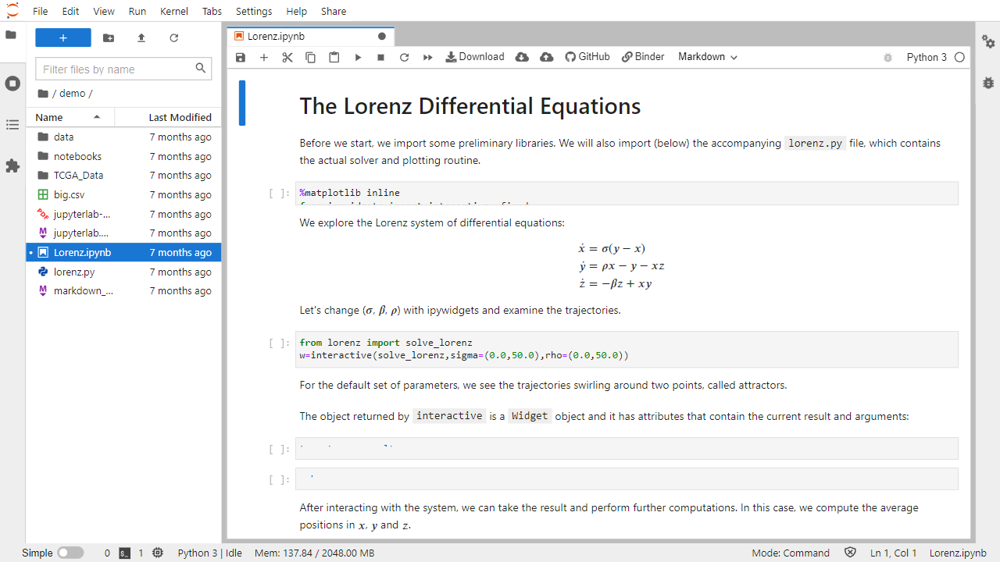

5. Oprogramowanie¶
5.1. Terminal VI¶
Jest to dedykowany firmware dla urządzeń realizujących funkcje terminala – oprogramowanie kontroluje wszystkie funkcje urządzenia zapewniając ciągłą pracę w trybie 24/7. W szczególności steruje parametrami kamery, kontroluje stan nośników danych, kontroluje synchronizację czasu, zarządza modułami komunikacyjnymi i kontroluje przesyłanie danych do systemu nadrzędnego.
Firmware posiada wbudowany interfejs graficzny (GUI) dostępny poprzez dowolną przeglądarkę internetową obsługującą HTML-5. Przy jego pomocy operator może monitorować stan urządzenia, może podglądać na bieżąco dane pomiarowe (zarejestrowane pojazdy). GUI pozwala także na zarządzanie uprawnieniami dostępu.
Firmware zaimplementowane ma także RestAPI pozwalające na dostęp do danych i sterowanie urządzeniem przez zautomatyzowany system nadrzędny.
5.2. BackOffice¶
Oprogramowanie dla systemu centralnego działa w chmurze pod kontrolą środowiska Kubernetes. Oprogramowanie ma konstrukcje modułową, która pozwala na elastyczne dopasowanie architektury do potrzeb użytkownika. W poniższych punktach wymieniono najważniejsze aplikacje.
5.2.1. Baza¶

Aplikacja Base stanowi podstawę działania całego systemu centralnego i składa się z modułów implementujących główne funkcjonalności:
uwierzytelnianie (ang. authentication)
udostępnianie API oraz GUI (ang. ingress)
zarządzanie użytkownikami / grupami (ang. user management)
zarządzanie przechowywaniem i przeszukiwaniem danych (ang. storage)
zarządzanie konfiguracją (ang. configuration), w tym zarządzanie listą urządzeń pomiarowych (ang. terminals) oraz listą punktów pomiarowych (ang. locations)
zarządzanie odbiorem danych pomiarowych / statusów (ang. receivers)
zarządzanie przepływem danych między komponentami systemu (ang. message routing)
zarządzanie powiadomieniami – wysyłanie danych do systemów nadrzędnych
udostępnianie map dla innych aplikacji (w postaci wektorowej i rastrowej)
Elementem aplikacji Base jest także główny ekran startowy systemu.
5.2.2. Pojazdy¶
Aplikacja Vehicles jest dedykowanym modułem pozwalającym użytkownikowi na przeglądanie danych dotyczących zarejestrowanych pojazdów. Aplikacja działa jako aplikacja internetowa. Użytkownik ma dostęp do danych o lokalizacji punktów pomiarowych, może wyszukiwać zarejestrowane pojazdy wykorzystując rozbudowany mechanizm filtrów, może dotrzeć do pełnej listy informacji o pojeździe (zdjęcia, metadane). Dostępna jest także możliwość pobierania danych o przejazdach w formacie tabelarycznym.
5.2.3. Monitor¶

Aplikacja Monitor służy do pro-aktywnego nadzoru infrastruktury pomiarowej wykorzystujące pakiet Icinga. Aplikacja kontroluje stan wszystkich urządzeń pomiarowych oraz stan usług krytycznych działających w systemie centralnym. W razie wystąpienia awarii aplikacja umożliwia wysłanie powiadomień (np. e-mail) do wskazanej grupy operatorów.
5.2.4. Analityka¶
Aplikacja Analytics służy do rozszerzonych analiz danych wykorzystująca pakiet JupyterLab. Aplikacja udostępniona jest przez GUI i pozwala na uruchamianie skryptów przygotowanych przez NeuroCar do pobrania z adresu https://gitlab.com/ncar-tools/04
5.2.5. Support¶
Aplikacja Support działa w chmurze i przeznaczona jest do zarządzania procesem naprawy usterek (ang. Ticket tracking).